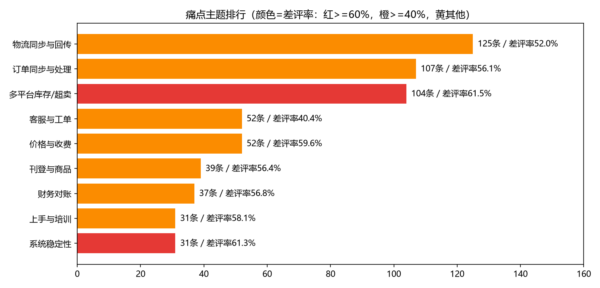
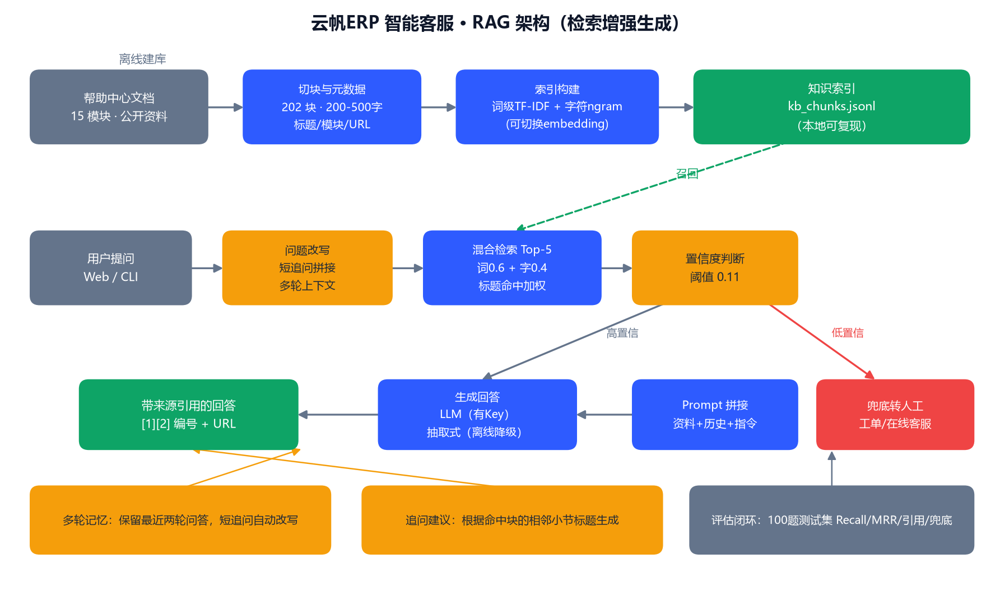

Design Portfolio
实 施 交 付 顾 问 / 客 户 成 功 · 应 届
从听见客户，到让续约发生
一套数据驱动的客户经营体系——四个项目首尾相连，覆盖客户全生命周期：先用量化方法听见客户在问什么、痛在哪里；再建立指标体系识别流失风险；然后设计 90 天经营动作把风险管起来；最后用 AI 把高频问题自助化。每个项目都有可打开的报告、可复现的评估、可现场演示的产物。
评估可复现 一条命令重跑全部指标
听见VoC 客户声音洞察
→
识别健康度与流失预警
→
管理90 天作战地图
→
自助AI 知识库机器人
→
留存续约率 77.1% 的全周期抓手
制作人
王泳雯
客户旅程总览
PART 00
页面即客户旅程：四个项目按客户生命周期落位，从听见、识别、管理到自助服务，首尾相连。
PHASE 1 · 贯穿全程③ 听见客户1045 条反馈 → 痛点排行与增值机会，产出 65 条真实提问
→
PHASE 2 · 运营期① 识别风险500 客户 ×12 月，健康度评分与可解释流失预警
→
PHASE 3 · 全周期② 管理动作90 天三阶段经营动作 + 8 个即用模板 + 续约话术
→
PHASE 4 · 服务端④ 自助服务VoC 提问做测试集，RAG 问答带来源引用与兜底
听见客户 · 客户声音洞察 VoC
PART 01
jieba / SnowNLP / TF-IDF+LDA
P1 · 数据从哪里来、客户真正在抱怨什么——把 1045 条散落反馈，变成一张能指导产品的痛点地图。背景：客户成功团队常靠"感觉"判断痛点，反馈散落在应用商店、社区、问答平台，无法量化、排序与追踪。
项目要点
- 搭建合规采集骨架（公开页面、限速、仅留存文本），模拟多来源渠道聚合
- 清洗管道：去广告 + 完全/近似去重 + 短评过滤，1045 → 678 条有效样本
- 种子词加权投票归类（主）与 LDA 主题模型（辅）交叉验证，归类一致率 0.83
- 每个痛点附原文证据与差评率，输出 9 大痛点排行与 7 条增值机会（含 P0-P2 优先级）
原始反馈→有效样本1045→678
归类一致率（交叉验证）0.83
痛点主题排行TOP9
真实提问流入 RAG 测试集65 条

痛点主题排行（颜色 = 差评率）
识别风险 · 客户健康度与流失预警
PART 02
pandas / ECharts / Excel 原生图表
P2 · 把"客户会不会流失"从感觉变成可计算的分数——500 家客户 12 个月数据，一套可解释的流失预警体系。背景：SaaS 续约依赖提前干预，但"客户还活着吗"缺乏统一度量；干预晚了，流失不可逆。
项目要点
- 构造 6 类典型客户原型（登录骤降、工单激增、突发流失、成功挽回…），生成 500×12 月模拟数据（种子 42 可复现）
- 健康度 = 使用率 40% + 登录趋势 25% + 工单趋势 25% + CSAT 10%，三层分级 + R1-R5 可解释预警规则
- 输出 ECharts 看板 + Excel 原生图表看板 + 63 家当月预警干预名单
- 3 个完整案例复盘：信号 → 预警 → 干预 → 结局，含挽回与流失对照组
整体续约率（380 到期/293 续约）77.1%
当月预警客户（红19/橙22/黄22）63
红/橙客户风险 ARR¥347,760
客户 × 月份数据量500×12
管理动作 · 90 天客户成功作战地图
PART 03
跨境电商 ERP · 客户生命周期方法论
P3 · 预警出来之后，客户成功经理每天该做什么——把"客户成功"从口号拆成 90 天可执行的动作清单。背景：新签客户头 90 天流失率最高，但大多数团队没有标准动作；续约谈判也往往"临时抱佛脚"。
项目要点
- 三阶段闭环：Onboarding（1-30 天）授权→初始化→首单→培训；运营（31-60 天）巡检→回访→深度引导→增购识别；续约（61-90 天）提前 60 天启动→价值回顾→异议处理→增值推荐
- 每阶段"目标 - 动作 - 指标 - 风险"四要素闭环，配 RACI 责任矩阵
- 沉淀 8 个即用模板：欢迎邮件 / Onboarding 检查清单 / 回访问题清单 / QBR 议程 / 价值回顾 PPT 骨架 / 续约邀约 / 异议处理 FAQ / 30 天激活任务表
- 与 P2 预警名单联动：3 个典型预警客户（C0007/C0023/C0150）直接写进续约谈判场景与话术
阶段闭环（Onboarding→运营→续约）3
即用模板8 个
责任矩阵RACI
续约谈判场景（含预警客户案例）3
自助服务 · AI 知识库机器人（RAG）
PART 04
RAG / TF-IDF 混合检索 / Flask / 可切换 LLM
P4 · 把高频支持问题交给 AI，且每一步都可核验——让"客服机器人"先学会说"我不知道"。背景：VoC 显示"上手与培训、常见报错"是高差评痛点；客服机器人如果乱答，比不答更伤客户信任。
项目要点
- 15 模块 202 个知识块，200-500 字切块并带标题/模块/URL 元数据
- 词级 TF-IDF + 字符 ngram 混合检索（Top5），查询扩展以 0.5 低权重注入，消融实验 MRR 0.87 → 0.89
- 置信度阈值 0.11（用 100 题分数分布标定）——低于阈值不硬答，明确转人工
- 多轮追问改写、追问建议、来源 [1][2] 编号 + URL；无 API Key 离线可完整演示，配 Key 自动切换 LLM 生成
Recall@5（实测可复现）0.97
MRR（查询扩展开启）0.89
答案产出率（40 道人工题）0.975
测试题（60 VoC + 40 人工）100

RAG 架构：离线建库 + 在线问答 + 评估闭环
四个项目可成一个体系
EVIDENCE
每一条联动都可验证，不是叙事包装。
数据流 01
③ → ④
P1 从真实反馈里挖出的客户提问，直接成为 P4 测试集主体（60/100 题），机器人效果用"客户真实会问的问题"来验收。
tests/voc_questions.jsonl 65 条提问
数据流 02
① → ②
P2 输出的 63 家预警名单与 3 个典型案例，写进 P3 续约阶段的谈判场景与话术，预警不再停留在看板。
C0007 / C0023 / C0150 三案例话术联动
闭环 03
③ → ④ → ③
P1 提出的"AI 知识库"增值机会，由 P4 落地验证；痛点—机会—产品形成闭环证据链，回应"从反馈里找钱"。
7 条增值机会 → P4 产品验证
数据可信度
TRUST
数据来源如实标注
客户数据、知识库、评论样本均为自造模拟数据，全部在报告/README 中明示，种子固定可复现。方法论本身可直接迁移到真实数据。
评估可复现
所有指标不是截图——本地执行 python tests/eval_rag.py 即可重跑 100 题评估，Recall / MRR / 答案质量与报告逐项一致。
迭代有记录
12 组参数网格 + 消融实验（查询扩展开/关）完整记录在 iteration_log.csv，每个"为什么选这个数"都能查到实验依据。
已知局限主动披露
长口语化问题仍会被通用词拉低分数、跨模块歧义题已修复——这些"弱点"我写进评估报告，面试时可以直接聊。
Design Portfolio
感谢观看 · 期待合作
制作人
王泳雯